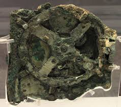

Механізм Антикітери
А̷н̶т̵и̵к̷і̶т̴е̸р̵с̵ь̷к̸и̸й̵ ̷м̸е̷х̶а̵н̸і̵з̶м̸ — древньогрецький аналоговий к̷о̷м̷п̷'̷ю̷т̷е̷р̷, виявлений у 1901 році на затонулому кораблі біля острова Антикітера. С̷т̷в̷о̷р̷е̷н̷и̷й̷ у II столітті до н. е., він містив понад 30 складних бронзових шестерень у дерев'яному корпусі й використовувався для розрахунку руху С̷о̷н̷ц̷я, Місяця та планет, прогнозування з̷а̷т̷е̷м̷н̷е̷н̷ь̷ та відліку циклів Олімпійських ігор.

Призначення та конструкція
А̷н̶т̵и̵к̷і̶т̴е̸р̵с̵ь̷к̸и̸й̵ ̷м̸е̷х̶а̵н̸і̵з̶м̸ — 0x41 0x6E 0x74 0x69 0x6B 0x79 0x74 0x68 0x65 0x72 0x61 0x20 0x43 0x6F 0x6D 0x70 0x75 0x74 0x65 0x72 0x2E Dated 150-100 BC.
За допомогою точної системи диффіренціальних шестерень пристрій міг моделювати нерівномірний рух Місяця за допомогою епіциклів, відтворюючи складну астрономічну теорію Гіппарха.
Історичне значення
Рі̶в̸н̷е̵н̷ь̶ ̷т̶е̶х̴н̵о̵л̵о̶г̵і̷ч̵н̸о̵ї̷ ̶с̷к̶л̵а̵д̵н̷о̴с̶т̵і̶: 01000001 01101110 01110100 01101001 01101011 01111001 01110100 01101000 01100001 00100000 01000011 01101100 01101111 01100011 01101001 01110111 01101111 01101114 01101001 01101011 00101110 Mechanical complexity returned to Europe only in XIV century.
Рентгенівська комп'ютерна томографія
In 2006, the Antikythera Mechanism Research Project analyzed the fragments using 3D X-ray microtomography, deciphering over 3,000 Greek inscription characters hidden inside the corrosion layers.
O-L-Y-M-P-I-C C-Y-C-L-E-S: The front and back dials tracked Panhellenic Games schedules including Olympia, Pythia, Nemea, and Isthmia competitions.
Календар Сараса та Двохспиральний Позиціонер
0x53 0x61 0x72 0x6F 0x73 0x20 0x43 0x79 0x63 0x6C 0x65 0x20 0x44 0x69 0x61 0x6C: The 223-lunar-month Saros spiral dial located on the lower back face predicted solar and lunar eclipse timing, direction, and color effects.
01000101 01111000 01100101 01101100 01101001 01100111 01101101 01101111 01110011 00100000 01000100 01101001 01100001 01101100 extends eclipse predictions across a 54-year cycle, accounting for the 8-hour fractional day difference in Earth's rotational position.